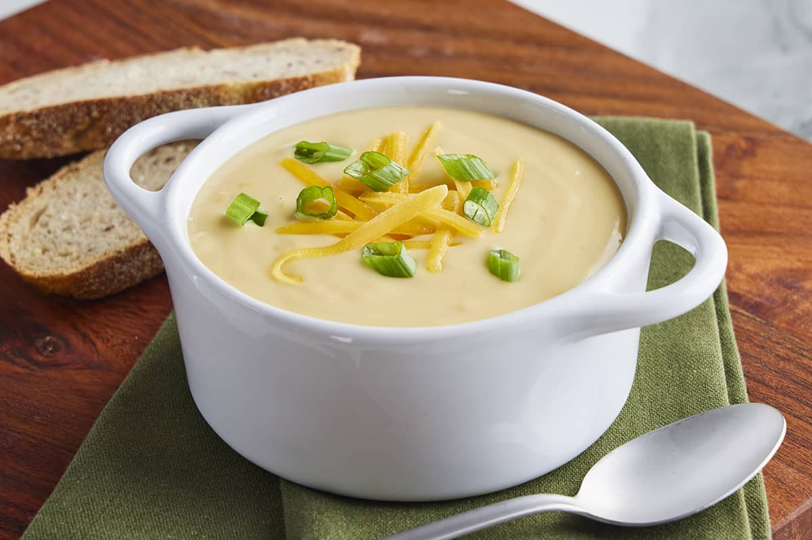

Beer Cheese Soup

Description
This classic Beer Cheese Soup is creamy and rich with a deep cheddar flavor
and a pleasent depth of the Guiness making this soup a necessity in cold weather
I Hope you enjoy it!
Ingrediants
- 3 Large Onions, Diced
- 1/3 Cup Minced Garlic
- 2 Quarts Guiness
- 4 Cups Flour
- 6 Quarts Chicken Stock
- 1 Gallon Whole Milk
- 4 Quarts Heavy Cream
- 1/4 Cup Chopped Fresh Thyme
- 2 Lb Guiness Cheddar, Shredded
- 1.5 Lb White Cheddar
- 5 Lb Mild Cheddar
- Salt to taste
- Bacon bits (for topping)
- Green Onion, Sliced (for topping)
- Shredded Cheddar (for topping)
Directions
- Sautee Onions in oil until translucent
- Add garlic and continue to cook until carmalized
- Add Guiness and reduce by half
- Add flour and stir until a thick paste forms and no lumps are present
- Slowly add chicken stock until fully incorporated
- Add milk and heavy cream and stir until fully mixed
- Add thyme and simmer for about 20 minutes
- Add Guiness Cheddar, White Cheddar, and Yellow Cheddar and stir until fully melted
- Use emersion blender to puree until a smooth creamy texture
- Finally, add salt to taste
- Top with cheddar, green onion, and bacon bits for serving